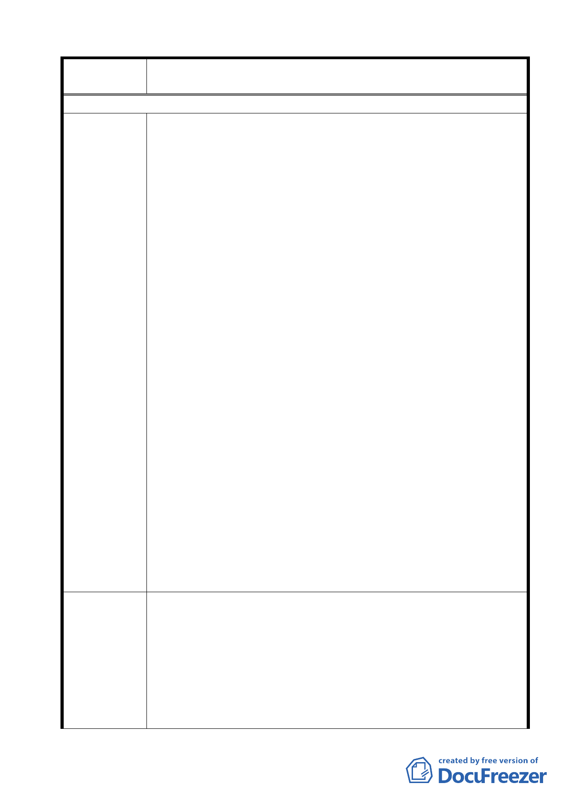

案名
變更臺北市士林區陽明山山仔后地區第二種住宅區為特定住宅區
細部計畫案
97/2/20 陳情意見
1.細讀修正案內容，與修正前的細部計畫僅有 2 點明確的不同。
（1）修正變更計畫區域大小與比例，原討論由 37.37 公頃擴大為
73.63 公頃。有關計畫區域大小的改變，是原先的內容有誤，
或另擴大細部計畫區域。
（2）被指定為歷史建物保存的私有土地，允許辦理容積移轉。「容
積移轉」疑點重重，96/6/15 公展的細部計畫第 9 頁註明不
允許容積移轉，修正版第 10 頁增加了容積移轉。而且在修
正版中的第 10 頁第陸點的其他說明，竄改了 9/6/15 公展的
原版內容，在修正案的修正對照表第 10 頁的對照內容也作
了同樣的竄改，企圖以修改原案內容通過容積移轉的審核，
是否受到臺銀的關說，所有涉及違法行為，得請政風處詳查。
2.變更案的法令依據是都市計畫法第 27 條第 1 項第 4 款：為配合
中央、直轄市或縣市興建重大設施。所謂重大設施於此案，應
陳情理由
指區內「原美軍宿舍的保存」，所以我們在上次會議時主張，都
發局應根據原案所依法令的實質與精神，先擬主要計畫。
3.都發局關於「山仔后地區所面臨的開發壓力」課題，回應了 4
點，第 4 點提到「為避免該土地等於禁建期滿後僅如現有一般
民間模式於短期內開發完竣，本案有極變更之急迫性與必要
性」。結果，都發局在細部計畫中作的決定是增加了完全不合理
的地目變更，這樣一來不是更吸引建商財團上山來開發投資
嗎。所謂「變更的急迫性與必要性」是為了方便建商與財團，
對已經夠擁擠的山仔后作更大的破壞，還是為了保護歷史建
築，作此細部計畫案，我們百思不解。
4.如果針對細部計畫最重要的保護議題，都發局避而不談，也不
回答我們的問題，只用一大堆次要課題模糊焦點，明修棧道，
暗渡陳倉，試圖用原內容與部分竄改過的內容再次闖關，不但
浪費行政資源與大家的時間，也太不負責任，若有違法之處，
我們必定追究。
1.依都市計畫法第 15 條第 5 款（名勝、古蹟及具有紀念性或藝術
價值應予保存之建築），都發局有權力將美軍宿舍區 15.8 公頃定
為「歷史保護區」，為何仍堅持修改細部計畫，而不作主要計畫。
建議辦法
如果細部計畫是為了保護美軍宿舍區而設的，唯有重修主要計
畫，才能有效達到保護的目的。最近剛露面的「天母白屋」就
是一例，文化局於 9471/27 公告指定「天母白屋」為本市市定
古蹟，等了 2 年再向都發局申請變更主要計畫，將天母白屋及
周遭數筆土地一併劃入保存區，計畫在去（96）年 5 月底通過
44